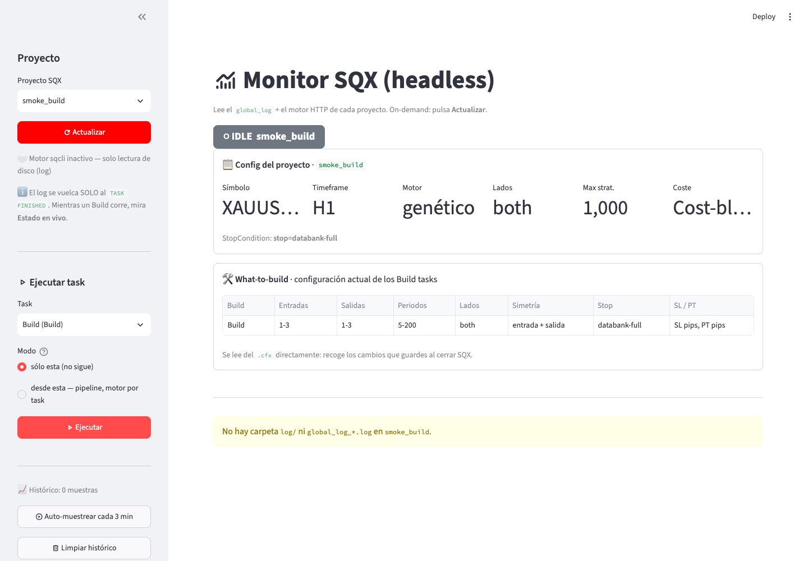
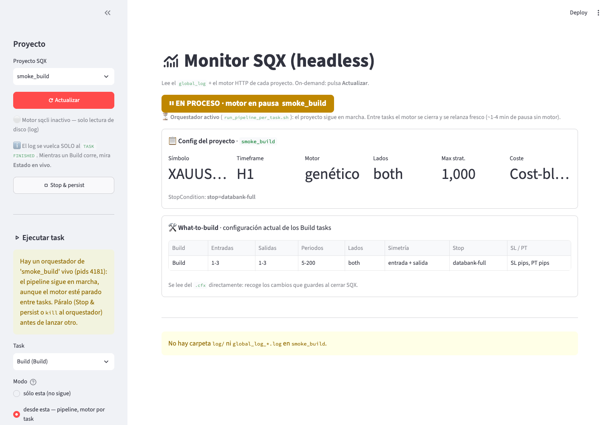
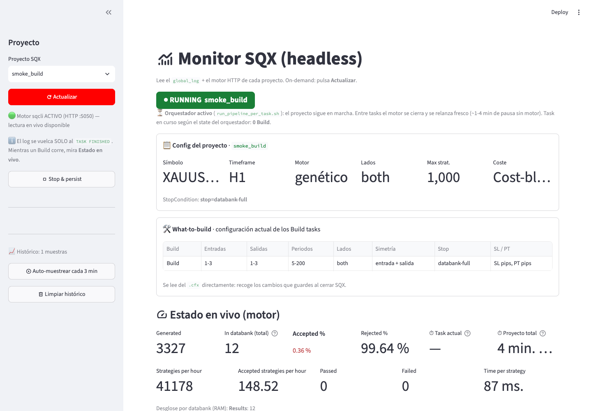
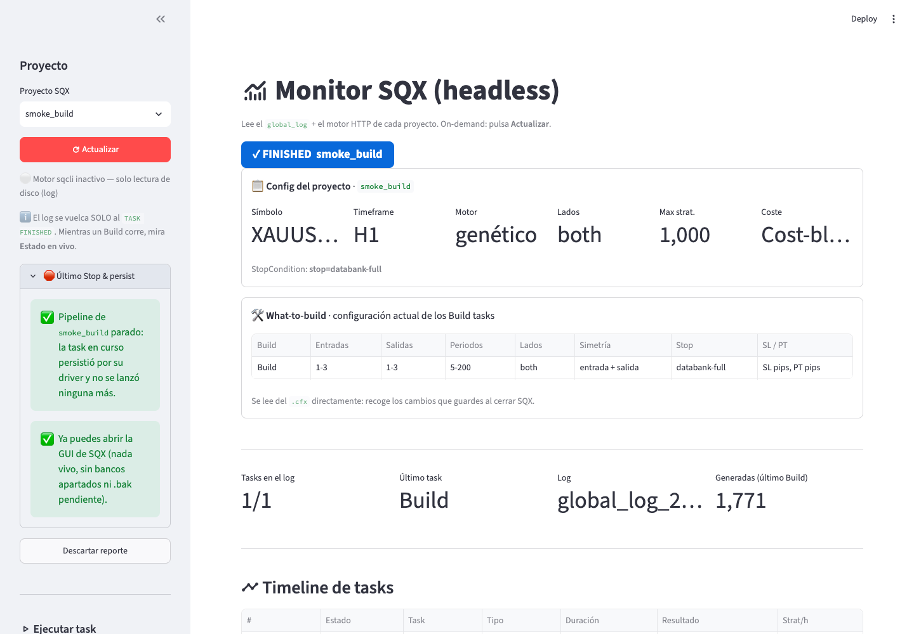

Guía de sqx-headless
Lanzar, vigilar y parar proyectos de StrategyQuant X sin abrir la GUI, en macOS.
Probado con SQX build 144 en Apple Silicon. Para los detalles de cada comando, el README.md;
para las trampas conocidas, AGENTS.md y la carpeta docs/.
1. Qué hace y cuándo te sirve
Si lanzas desde la GUI un proyecto largo (un Build seguido de retests y filtros), SQX usa un único motor para todo y la memoria se va acumulando task tras task hasta que el Mac se queda sin RAM. Esta herramienta ejecuta el mismo proyecto task a task, con un motor de SQX nuevo para cada una, y sin ventana.
- Pipelines largos sin quedarse sin memoria. Cada task empieza con la memoria limpia.
- Seguimiento desde el navegador. Un monitor muestra el estado de cada task, los databanks, la evolución del fitness y los motivos de rechazo.
- Parar sin perder estrategias. Los databanks se guardan a disco antes de cerrar el motor, y el proyecto queda listo para abrirlo en la GUI.
Lo que no hace: no crea ni configura proyectos (eso sigue siendo cosa de la GUI) y no funciona en Windows.
SQX trae, dentro de la app, un motor sin ventana (sqcli) que se maneja por HTTP en
el puerto 5050. Todo lo de este repo habla con ese motor: lo arranca, le dice qué task correr, le pide que
guarde los databanks y lo cierra. Tu proyecto es el mismo que ves en la GUI; solo cambia quién lo ejecuta.
2. Instalar (una vez)
Necesitas macOS, StrategyQuant X instalado en /Applications o ~/Applications con la
licencia activa, Python 3.11 (brew install python@3.11 o el instalador de python.org), git (si no lo
tienes, xcode-select --install) y acceso a este repo, que es privado: te lo da quien te lo pasó.
git clone https://github.com/sergiobe31/sqx-headless.git
cd sqx-headless
python3.11 -m venv .venv
source .venv/bin/activate
pip install -r requirements.txt
mkdir -p sqx/output
python sqx/paths.py # comprueba que encuentra tu SQXpython sqx/paths.py te dice qué instalación de SQX va a usar. Si tienes varias, elige una con
export SQX_APP=/Applications/StrategyQuantX<versión>.app y ponlo en tu ~/.zshrc.
Activa el entorno con source .venv/bin/activate. Los scripts llaman a python3 y
tiene que ser el de .venv.
3. Ajustar la memoria (una vez)
El motor carga en memoria todos los databanks del proyecto: unos 0,9 GB por cada 1.000 estrategias.
De fábrica, SQX no le pone techo (-Xmx, la memoria máxima del motor) y el motor se queda con el 25 % de
la RAM del Mac, poco para proyectos grandes. La configuración de referencia, para un Mac de 16 GB, es esta en
/Applications/StrategyQuantX….app/Contents/Resources/sqcli.config:
option -Xms1g
option -Xmx6g
option -XX:+UseG1GCEdítalo con SQX cerrado y sin ninguna corrida en marcha, guarda antes una copia
(cp sqcli.config sqcli.config.bak) y repítelo cada vez que reinstales SQX.
Mientras corre una task, un vigilante de RAM mide la memoria del motor: avisa a los 8 GB y lo para a
los 9 GB, o si la RAM libre del Mac baja del 10 %. Si tienes más RAM y has subido el -Xmx, sube
también esos umbrales con WD_WARN_RSS_MB y WD_KILL_RSS_MB en tu ~/.zshrc. Como
orientación, sin medir: umbral de parada ≈ -Xmx + 3 GB (con -Xmx12g, 14336 y 15360 MB). Tienen
que estar puestas antes de lanzar: abre una terminal nueva y, si lanzas desde el monitor, reinícialo.
Cuando el vigilante para el motor no guarda: se pierde lo generado desde el último guardado automático. La task queda marcada como fallida por RAM y el pipeline te dice desde dónde reanudar.
4. Recorrido con el monitor
La forma más cómoda de usarlo es el monitor, una página que se abre en el navegador. Antes de empezar: GUI de SQX cerrada y el Mac enchufado y con la tapa abierta.
-
Abre el monitor. En la carpeta del repo, con el entorno activado:
caffeinate -i streamlit run sqx/sqx_monitor.pycaffeinate -iimpide que el Mac se duerma por inactividad mientras la terminal siga abierta. Déjala abierta mientras dure la corrida: lo que lances desde el monitor queda cubierto por ella. -
Elige el proyecto y pulsa Actualizar. Arriba ves el estado (IDLE = parado), la configuración del proyecto (símbolo, timeframe, motor…) y qué construye cada Build task. La página no se refresca sola: pulsa Actualizar cuando quieras ver el estado nuevo.

Proyecto parado. En la barra lateral, el bloque Ejecutar task. -
Lanza. En Ejecutar task elige la task por la que empezar y el modo:
- desde esta — pipeline, motor por task: corre esa task y todas las siguientes, cada una con un motor nuevo. Es lo normal para un proyecto entero.
- sólo esta (no sigue): corre solo esa task.
Para un proyecto entero, elige la primera task (índice 0) en modo desde esta. Pulsa Ejecutar. Al principio verás EN PROCESO · motor en pausa: el pipeline está vivo y el motor arrancando o cargando los databanks. Ese mismo estado aparece en la pausa de 1-4 minutos entre una task y la siguiente. Mientras un pipeline siga vivo, el monitor no deja lanzar otro.

Recién lanzado: el pipeline está vivo y el motor, arrancando. -
Vigila. Con la task en marcha el estado pasa a RUNNING y aparece Estado en vivo: estrategias generadas, cuántas hay en el databank, porcentaje aceptado y rechazado, velocidad y tiempo de la task. Más abajo, la evolución del fitness y los motivos de rechazo.
Si activas Auto-muestrear cada 3 min, el histórico se sigue guardando aunque cierres el monitor.

Build en marcha: generadas, en databank, aceptadas y rechazadas. -
Para cuando quieras con Stop & persist. Pide al motor que pare la task en curso, espera a que se guarden los databanks y cierra el motor; con un pipeline en marcha, además, no se lanza ninguna task más. El reporte te dice al final si ya es seguro abrir la GUI o por qué no.
Para seguir otro día: el log del orquestador (
/tmp/<proyecto>_pertask_<hora>.logsi lanzaste desde el monitor) termina con⏹ PARADA por el usuario en la task N … Reanuda: …. Relanza desde esa task para repetirla, o desde la siguiente para darla por buena con lo que ya guardó. Qué pasa con las estrategias de una task repetida depende de cómo esté configurada en SQX, igual que en la GUI.
Parada completada en unos 30 s: la task guardó, no se lanzó ninguna más y ya se puede abrir la GUI.El botón espera hasta 3 minutos. Si guardar tarda más (bancos de miles de estrategias), el reporte dice "parando": la parada sigue su curso y el pipeline se detiene al terminar de guardar. Pulsa Actualizar un rato después para verlo.
-
Antes de abrir la GUI. Si el reporte de Stop & persist dice que es seguro, puedes abrirla. En cualquier otro momento (otro día, tras un fallo), compruébalo:
python sqx/persist_before_gui.py MiProyectoSolo comprueba (no arranca nada): que no queden motor, GUI ni pipeline vivos, ni bancos apartados, ni un
.cfxa medio restaurar. Sale con código 0 si es seguro, o 1 con los motivos.
5. Lo mismo desde la terminal
Todo lo que hace el monitor tiene su comando. Son útiles para dejar algo lanzado por SSH o desde un script.
| Para | Comando |
|---|---|
| Ver las tasks y su índice (0, 1, 2…) | python sqx/run_task_headless.py MiProyecto --list |
| Lanzar el pipeline entero | nohup caffeinate -i bash sqx/run_pipeline_per_task.sh MiProyecto > sqx/output/MiProyecto_launch.log 2>&1 & |
| Lanzar desde la task 3, con menos RAM | nohup caffeinate -i bash sqx/run_pipeline_per_task.sh MiProyecto 3 --slim > sqx/output/MiProyecto_launch.log 2>&1 & |
| Lanzar una sola task | python sqx/run_task_headless.py MiProyecto --task "Nombre" --mode only |
| Varios proyectos seguidos | nohup caffeinate -i bash sqx/run_cascade_projects.sh 0 ProyectoA ProyectoB > sqx/output/cascada_launch.log 2>&1 & |
| Parar y guardar | python sqx/stop_and_persist.py MiProyecto |
| ¿Puedo abrir la GUI? | python sqx/persist_before_gui.py MiProyecto |
--slimes para proyectos con databanks grandes: mientras corre cada task, aparta los bancos que esa task no usa y al final los devuelve. No borra nada.- Si una task falla, el pipeline se detiene y te dice el índice desde el que reanudar (última línea
ABORT … Reanuda: …del log de lanzamiento). Vuelve a lanzar con ese índice. - Cada task tiene un tope de 12 horas y el driver comprueba el estado cada 15 minutos. Para tasks más
largas o retests cortos hay que ajustarlo: mira el
README.md, apartado Lanzar.
6. Cómo funciona por dentro
El guardado, paso a paso
Sin un guardado explícito, las estrategias que genera el motor viven solo en su memoria: si el motor muere, se pierden. Por eso el driver guarda los databanks a disco en cada sondeo y, al final de la task, hace un guardado final que confirma en el log del motor antes de cerrarlo:
- Si el motor escribe la línea
Databank '<proyecto>/<banco>' saved …, el guardado está confirmado. El driver comprueba además que en disco haya tantos.sqxcomo dice esa línea. - Si no había nada nuevo que guardar, el motor no escribe ninguna línea. Entonces el driver compara las
estrategias del motor con los
.sqxen disco: si coinciden, lo da por guardado. - Si no puede confirmarlo, deja el motor vivo para no perder nada, marca la task como fallida y el
pipeline se detiene.
stop_and_persist.pyreintenta el guardado.
La parada
stop_and_persist.py (o el botón del monitor) deja una marca de parada en la carpeta del proyecto y
pide al motor que pare la task en curso. El driver de esa task guarda y cierra el motor, y el orquestador, al
ver la marca, no lanza la siguiente: sale con código 3 y te dice en su log desde qué task reanudar. Si no hay
pipeline (un motor suelto), el propio stop_and_persist.py para el proyecto, guarda y cierra el motor.
7. Reglas que no hay que saltarse
- Abrir la GUI con un motor vivo. GUI y motor no pueden convivir: abrir la GUI encima de un motor corrompe databanks (caso real: un banco pasó de 4.000 a 136 estrategias).
- Matar
sqclia mano sin guardar antes. Lo que no esté en disco se pierde. Usa Stop & persist.
- Ningún motor vivo antes de lanzar:
pgrep -x sqclino debe devolver nada. Si encuentra un motor de otra corrida, el lanzamiento espera 2 minutos y aborta diciéndote cómo pararlo; nunca lo mata. - Databanks sin espacios en el nombre (los que crees tú). Los bancos con espacios no se pueden guardar por HTTP.
- Mac despierto, enchufado y con la tapa abierta. Si el Mac se duerme, el motor se congela o muere.
caffeinate -ievita el reposo por inactividad, pero no el de cerrar la tapa.
8. Si algo va mal
| Lo que ves | Qué hacer |
|---|---|
ABORT: ya hay un sqcli corriendo o hay un motor sqcli que no es de esta cadena |
Queda un motor vivo de otra corrida. Si no hay nada tuyo en marcha: python sqx/stop_and_persist.py <proyecto> y relanza con el índice que indique el mensaje. |
sync de <banco> NO confirmado: dejo el motor vivo |
El guardado final no se pudo confirmar y el motor sigue vivo a propósito; la task queda fallida y el pipeline se detiene. Ejecuta python sqx/stop_and_persist.py <proyecto> y revisa los .sqx en …/user/projects/<proyecto>/databanks/<banco>/. No abras la GUI ni mates sqcli antes. |
| El Mac se durmió durante la corrida | Lo guardado es lo del último sondeo (cada 15 min). Al despertar, pulsa Actualizar en el monitor: si el motor murió, el pipeline aborta e indica el índice desde el que reanudar. |
| El pipeline abortó con un índice | El índice está en la última línea ABORT … Reanuda: del log de lanzamiento. La causa, en sqx/output/<proyecto>_state.json. Relanza con ese índice. |
| Una task "termina" en segundos con 0 estrategias | Su databank de entrada estaba vacío o no está declarado en el proyecto (docs/persistencia-databanks.md). |
| El monitor avisa de Restore pendiente | Un lanzamiento murió a mitad y el .cfx puede tener tasks desactivadas. Pulsa Restaurar .cfx original. |
| El motor no responde pero sigue vivo | Mira su CPU varias veces: ps -o pid,%cpu,etime -p "$(pgrep -x sqcli)". CPU alta = está trabajando, espera. CPU por debajo del 5 % sostenida = colgado. Con un pipeline en marcha, deja que el driver lo resuelva. |
| La GUI tarda mucho en abrir o se congela | Demasiadas estrategias en los bancos: python sqx/gui_slim.py <proyecto> archive --banks A,B los aparta (no borra) y restore los devuelve. |
9. Usarlo con una IA
El repo trae AGENTS.md (y CLAUDE.md, que lo importa) con las reglas de operación y las
trampas conocidas. Abre la carpeta en Claude Code, Codex, Cursor o similar y la IA las cargará sola. Por ejemplo:
- "Lista las tasks de MiProyecto y lánzalo desde la 3 con --slim, con el Mac despierto."
- "El pipeline de MiProyecto ha abortado: mira los logs y dime desde dónde reanudar."
- "Para MiProyecto y deja los databanks listos para abrir la GUI."
La IA debe pedirte confirmación antes de parar o matar procesos, mover bancos o editar un .cfx.
10. Glosario
| Término | Qué es |
|---|---|
Motor, sqcli | SQX sin ventana. Lo arranca el driver y se maneja por HTTP en el puerto 5050. |
| Task | Cada paso de un custom project: un Build, un Retest, un filtro… |
| Databank, banco | Donde SQX guarda estrategias. En disco, una carpeta con un .sqx por estrategia (normalmente). |
| Orquestador | El script que recorre las tasks del proyecto y lanza cada una con un motor nuevo (run_pipeline_per_task.sh). |
| Driver | El script que lleva una task: arranca el motor, sondea, guarda y lo cierra (run_pipeline_headless.sh). |
| Guardar, persistir, sync | Escribir a disco los databanks que el motor tiene en memoria (synctofiles). |
--slim | Modo que aparta mientras corre cada task los bancos que esa task no usa, para gastar menos RAM. |
| Stop & persist | Parar guardando: el botón del monitor o stop_and_persist.py. |
| Sondeo | Cada vez que el driver mira el estado de la task (cada 15 min) y guarda los databanks. |
| Bancos apartados, Restore pendiente | --slim mueve bancos fuera del proyecto y el lanzamiento desactiva tasks en el .cfx mientras corre; si algo muere a medias, quedan sin devolver. El .cfx se restaura con el botón Restaurar .cfx original del monitor; los bancos, con python sqx/bank_plan.py <proyecto> --reconcile o al relanzar. |
| Vigilante de RAM | Proceso del driver que mide la memoria del motor y lo para si pasa del umbral. |